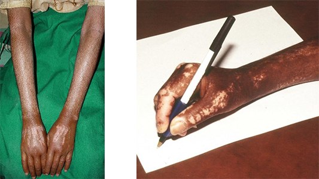

Module: In-depth information on muscle and lung disease with a focus on African Americans
Virginia Steen, MD
Presentation of scleroderma in African Americans
The initial presentation of scleroderma is often different in African Americans. Although Raynaud’s is the most common first symptom of scleroderma, African Americans may not easily recognize it. The blue, pale fingers associated with cold-induced Raynaud’s are often not as dramatic as in Caucasians. Also, many African Americans first notice changes in skin coloring. It is quite common for African American patients to notice marked darkening of the hands, arms, or face (or lighter areas) before they have Raynaud’s or swollen fingers. The disease affects the melanocytes, which are skin cells that make pigment. This results in increased and decreased pigmentation in certain areas.
Typical pigmentation (skin color) changes in African Americans with Scleroderma:
Hyperpigmentation
- Hyperpigmentation is early darkening of the hands, arms, and/or face.
- Patients find hyperpigmentation very distressing. The changes can severely affect body image.
- Often, the darker areas fade and even out over time.
Hypopigmentation
- Hypopigmentation is an absence of pigment. White areas that look like vitiligo (but are not) occur around the hair line, and across the chest, upper back and arms.
- Pigment changes occur even without skin thickening.
- With time, white pigment often darkens and blends in with normal pigment.
- Cover up make up is very important to self-image but can be very time consuming to apply.
These changes in pigment are often very distressing. Although there are no good treatments, the changes tend to fade with time. The areas can be covered with make-up. Some other ways to manage the pigment changes are:
- Sun protection
- Avoid the sun. Stay indoors during peak hours.
- Wear sun protective clothing, hats, and sunglasses.
- Use high SPF (>30) sunscreens for UVA and UVB (“wide spectrum”) protection.
- Retinoids are Vitamin A-derived medicine.
- Available only by prescription.
- Changes skin pigment by improving cell turnover. It can cause more dryness and irritation, so use sparingly.
- Hydroquinone is “Bleaching” cream.
- Turns off the enzyme (tyrosinase) that makes pigment.
- You must use sun-protection if you use this cream!
- Available over the counter and by prescription.
- 2% formulation is available over the counter
- 4% formulation requires a prescription
- Overuse can cause ochronosis, a darkening in the skin.
- Newer treatments – “Natural Treatments”
- Soy bean extracts – moisturizer with soy extract
- Licorice extract
- Niacinamide (Vitamin B3)
- Mulberry leaf extract
- Ellagic acid – an antioxidant found in strawberries and green tea
When African Americans first see a doctor for their scleroderma symptoms, they may not complain about the classic Raynaud’s or even tight skin. They may have mild joint symptoms, skin ‘changes,’ and a non–specific ANA (rather than a scleroderma-specific ANA). They are often diagnosed with lupus and treated with Plaquneil. The delay in diagnosis may be a major problem, because severe lung disease can occur early in the disease in African Americans.
Autoantibodies in Scleroderma
- Autoantibodies in African Americans with scleroderma
- Positive ANA with a nucleolar pattern
- Positive Scl 70 antibody
- Positive U1 RNP antibody, often seen with mixed connective tissue disease (MCTD)
- Autoantibodies in Caucasians with scleroderma
- Positive anti-centromere antibody (limited scleroderma)
- Positive Scl 70 antibody
- Positive RNA polymerase III severe diffuse scleroderma